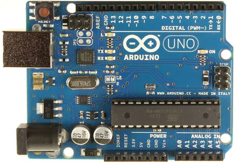
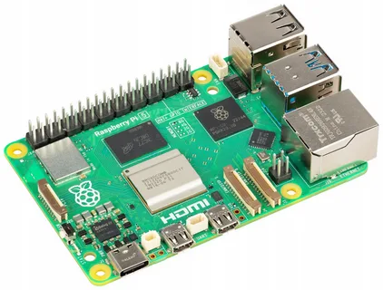

Название проекта
Разработка аппаратно-программного комплекса дистанционного управления беспилотной техникой и передачи данных посредством сети интернет
Проблематика
Сегодня большинство беспилотных устройств, которыми управляет человек-оператор, требуют использования специального пульта дистанционного управления. Такой пульт представляет собой отдельное носимое устройство, которое занимает место и имеет собственный вес, что может быть неудобным для пользователя. В то же время, современные смартфоны с доступом в интернет стали повсеместно доступны и теперь есть у почти каждого человека. Благодаря этому, практически у всех всегда под рукой имеется мобильное устройство с возможностью выхода в интернет и запуска браузера.
Цель
Сделать так, чтобы управлять колесной машиной и получать данные с неё можно было бы прямо со смартфона, без необходимости использовать какие-либо дополнительные пульты или сложное оборудование.
Ключевые задачи
- Разработка back-end части веб-приложения.
- Создание front-end интерфейса приложения.
- Программирование управления драйверами мотор-колес.
- Реализация алгоритмов обработки данных, собираемых беспилотной техникой.
- Обеспечение связи между компонентами программного комплекса.
Управление моторами
Arduino используется для взаимодействия с драйверами мотор-колес и обеспечивает точное управление движением колесной базы.
Серверная часть на Raspberry Pi
Raspberry Pi выступает в роли шлюза между веб-интерфейсом и Arduino, обеспечивая связь через интернет.
Ожидаемый результат
Программно-аппаратный комплекс для дистанционного управления беспилотной техникой и передачи данных через интернет. Разработанный прототип будет являться универсальным управляющим устройством, которое можно внедрить в широкий ряд колесных баз.